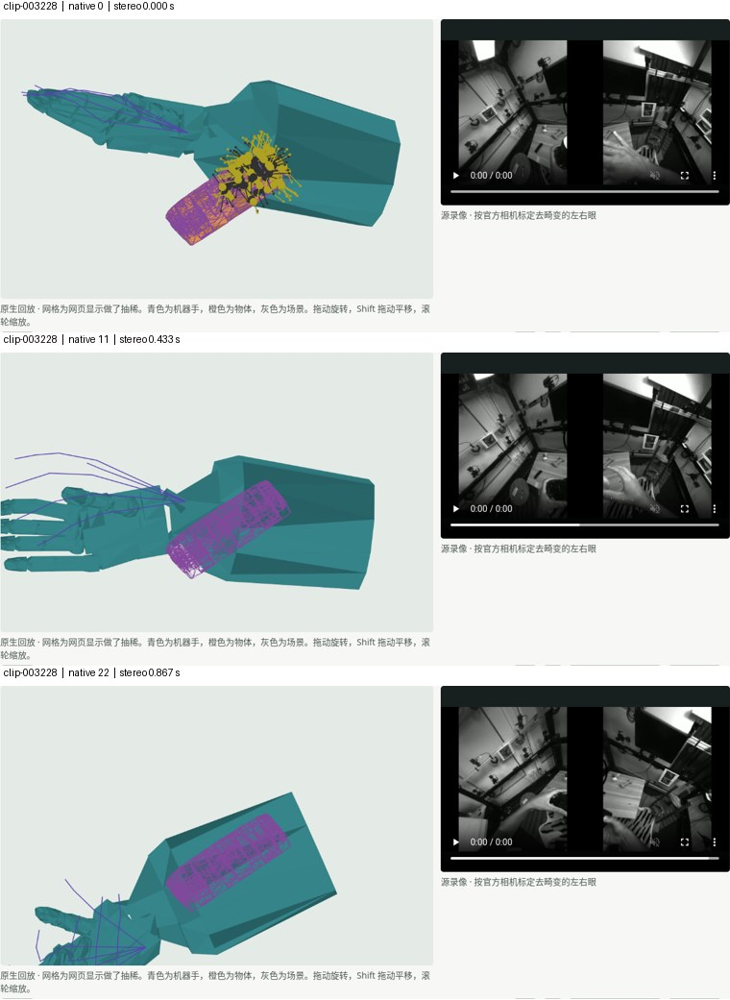
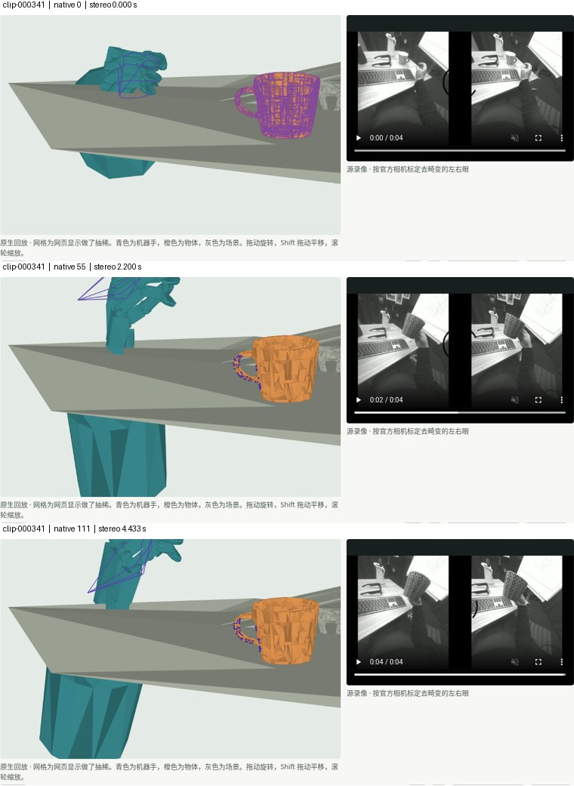
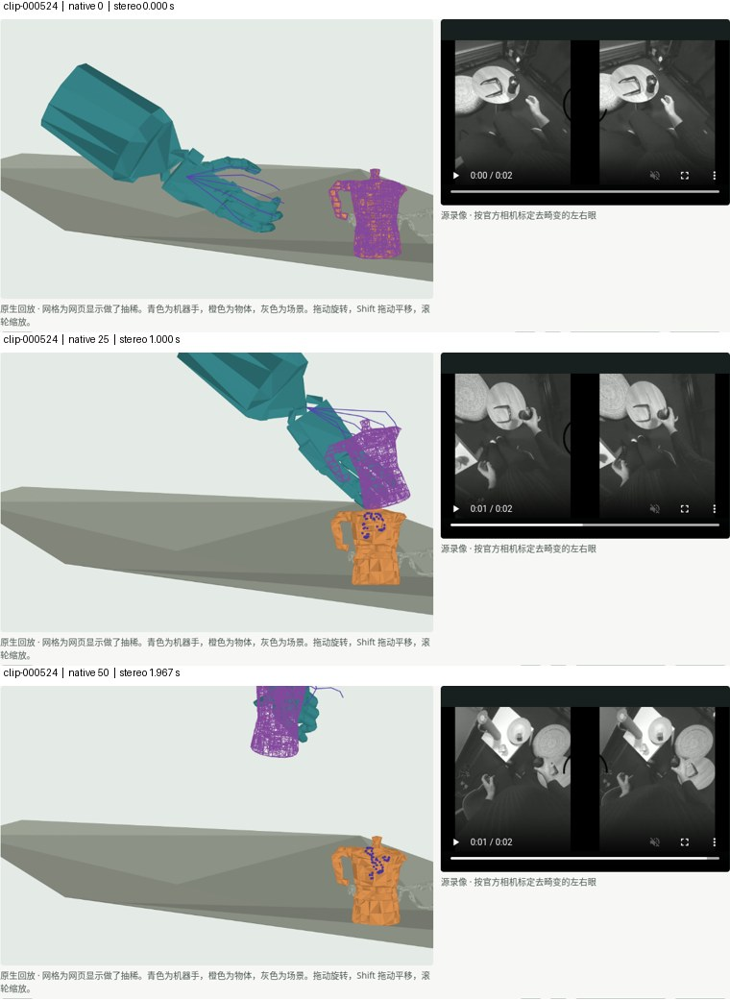
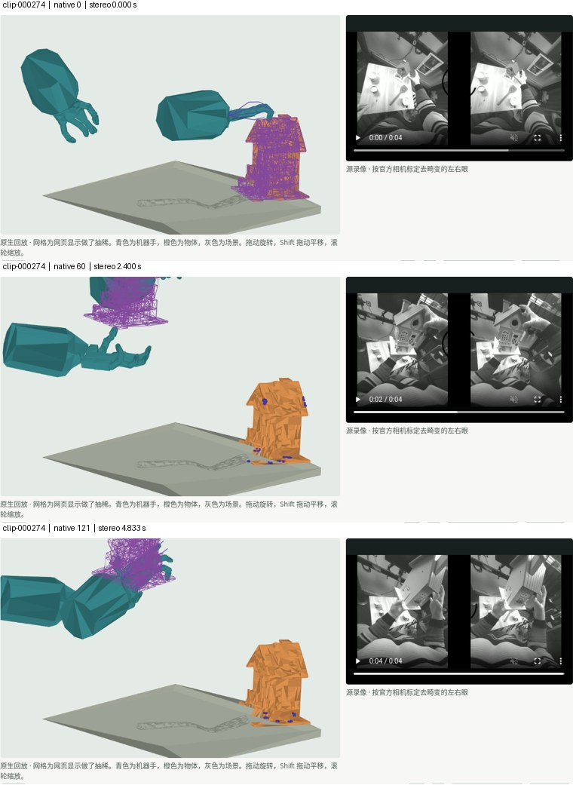

全部确认记录确认实验的逐帧抽查
从可执行源中按登记顺序取 Aria、Quest 3 各一段，再用固定种子从其余源抽两段。全部选择 Shadow、严格源手面约束、种子 1009 和 5 ms 步长。下图保留每段首帧、中间帧和最后记录帧，逐帧核对源视频时钟和仿真回放。
clip-003228 · Aria
首帧物体和手腕附近出现密集受力点。中、末两个抽查帧中，紫色源物体轮廓仍在手旁，该处已看不到橙色仿真物体，两帧均未记录到正向受力点。
0.000 秒 · 源帧 65、0.440 秒 · 源帧 78、0.870 秒 · 源帧 91
打开原生交互回放
clip-000341 · Quest3
源录像中杯子从桌上被举到空中；仿真中橙色杯子在中、末两帧仍停在灰色支撑面上，手与杯子分离。
0.000 秒 · 源帧 16、2.205 秒 · 源帧 82、4.435 秒 · 源帧 149
打开原生交互回放
clip-000524 · Quest3
首帧的壶和源轮廓重合。中间帧源轮廓已上移，仿真壶仍立在支撑面上；末帧仿真壶保持在原处。
0.000 秒 · 源帧 89、1.000 秒 · 源帧 119、2.000 秒 · 源帧 148
打开原生交互回放
clip-000274 · Quest3
双目视频中，带屋顶的物体被双手抬起并转动。中间帧与末帧，橙色仿真物体的底部仍紧邻灰色支撑面。
0.000 秒 · 源帧 0、2.405 秒 · 源帧 72、4.835 秒 · 源帧 145
打开原生交互回放